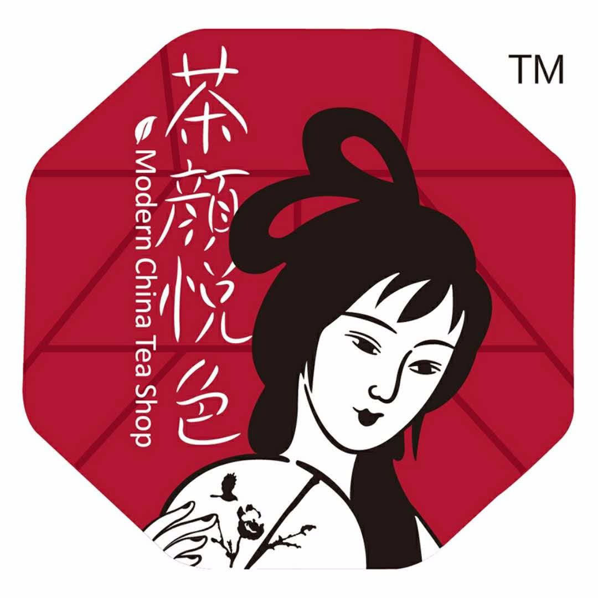
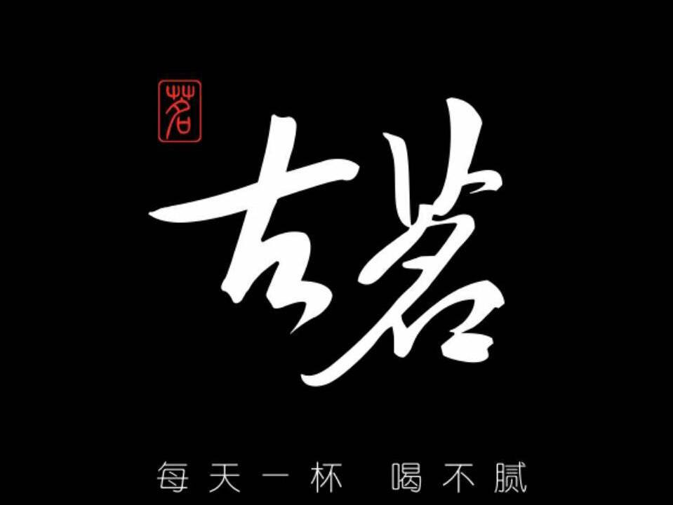

1.蜜雪冰城
个人觉得蜜雪冰城很不错，价格特别便宜，基本都在十块钱以内，而且味道也好喝。
2.茶颜悦色

茶颜悦色是大陆首创以中国风为主题的奶茶店，成立于2014年中旬，总部设在有“星城”之称的长沙最繁华地段的黄兴步行街。个人觉得有点小贵，但是感觉很有文化气息。
3.古茗

古茗奶茶，零添加、零防腐、零氧化，让大家能够享受到简单却不平凡的味道。
4.书亦烧仙草
这个世界上没有什么烦恼是一杯烧仙草解决不了的，如果有，那就来两杯。哈哈料确实很多，能喝饱。
5.益禾堂
益禾烤奶，有点甜，招牌。